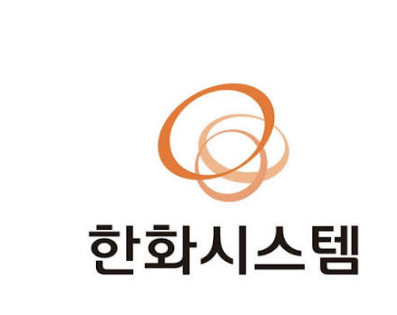
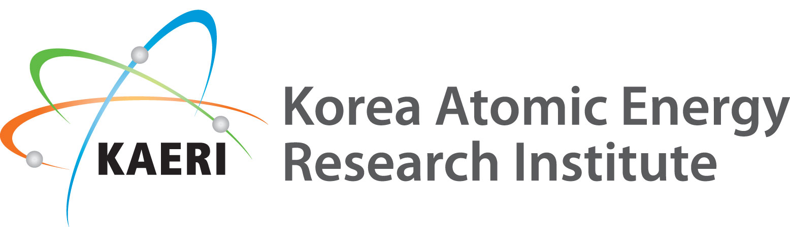
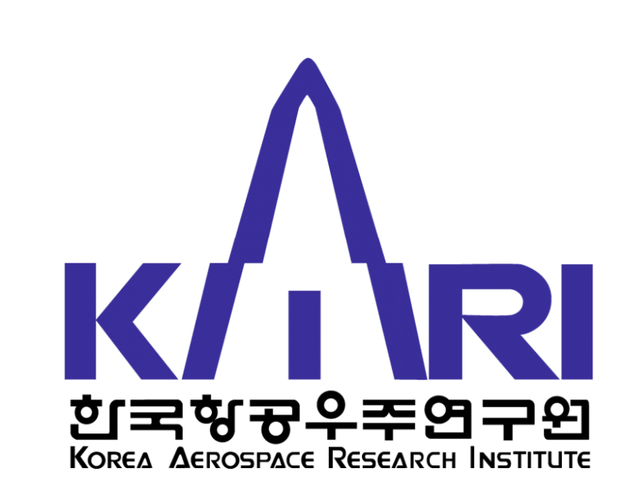

제품의 단종 / 신뢰도가 낮은 LRF 센서를 공급하지 않는 안정적인 공급 회사여야 한다.
LRF 센서의 미션 사용 Range Margin을 기존보다 높게 납품할 수 있어야 한다.
LRF 센서는 5개월의 임무 기간 동안 강한 방사선에도 임무를 원활히 수행할 수 있는 내방사선 성질을 가져야 한다.
달착륙 미션 수행 환경을 모사하고 검증/인증할 수 있는 시험 설비가 갖춰져야 한다.



30년 이상 K2·K21·K9 등 핵심 무기체계의 사격통제시스템을 지속 공급한 양산·전력화 경험
Co-60 TID 시험/인증
0~20Gy/h 장시간 저선량 Gamma 시험
열진공(Optical TVAC), Thermal Cycling, 진동시험, Shock/Pyroshock, Acoustic Stability, 정밀 광축 정렬 시험